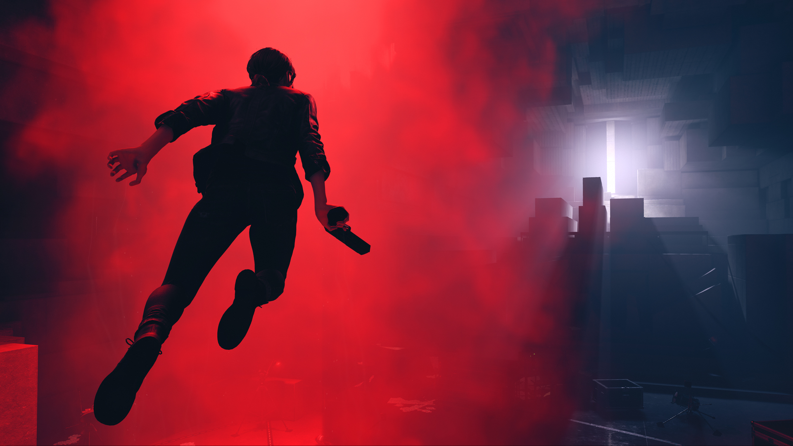

Control
Uma aventura de ação sobrenatural em terceira pessoa.

Control é a história de Jesse Faden. A trama principal concentra-se em sua busca pessoal de respostas à medida que ela cresce no papel de Diretora. O mundo do Control tem sua própria história, assim como os aliados que Jesse conhece ao longo do caminho. Missões secundárias e segredos estão por toda parte. Jesse trabalha com outros agentes do Bureau, decodifica cifras enigmáticas e descobre experiências estranhas no Bureau.
Jesse Faden vai ao Departamento Federal de Controle (ou Federal Bureau of Control, em inglês) para assumir o cargo de diretora. Acontece que o antigo diretor, Zachariah Trench, está morto no escritório que agora é dela -- um aparente suicídio.
O enredo e a ambientação
Estrelado por Courtney Hope no papel de Jesse, o elenco conta ainda com James McCaffrey como Trench e Matthew Porretta, que vive o Doutor Casper Darling -- todos já trabalharam com a Remedy anteriormente, seja em Max Payne, Alan Wake ou Quantum Break. Inclusive, a atuação é vista até mesmo em live-action, além do trabalho de captação de imagem -- isso acontece em cutscenes ou em projeções de vídeo dentro do game. A direção é de Mikael Kasurinen, com roteiro de Sam Lake (o rosto clássico de Max no primeiro Max Payne), que também atua como diretor criativo. Em termos práticos, ele é grande responsável por toda a bizarrice de Control.
Outros personagens secundários importantes incluem a chefe de segurança Marshall, o segurança Simon Arish, a chefe de pesquisa Emily Pope (que mal perde por esperar para examinar Jesse) e o enigmático faxineiro Ahti, finlandês de sotaque carregado que está na empresa há anos e conhece a tudo e todos.
Jesse Faden é a nova diretora do Departamento Federal de Controle, mas ela não está lá por acaso. Nossa heroína, cujas vestimentas lembram levemente a Viúva Negra de Scarlett Johansson e os poderes remetem ao mais poderoso mutante dos X-Men (leia-se: Fênix Negra), possui uma motivação pessoal por trás disso tudo. Seu irmão, Dylan, está desaparecido há 17 anos, e ela suspeita que os novos colegas de trabalho tenham respostas. Nosso principal inimigo, ao menos na maior parte do tempo, é uma entidade intitulada "Ruído", que se apodera de humanos e faz deles criaturas sedentas por te matar.
Curte uma teoria da conspiração? Olha o prato cheio aí, bem na mesa: toda nossa jornada se passa na FBC, agência secreta do governo dos Estados Unidos que é responsável por investigar, estudar e abafar casos sobrenaturais que violam as leis da realidade. Apesar de se passar em um único ambiente, não se engane: há vários setores no prédio para explorar com a ajuda de deslocamentos rápidos, e se perder não é difícil. Fica a dica: siga as indicações das placas e olhe o tempo todo para o mapa, que causará uma sensação de dejà vu entre os fãs de Resident Evil.
A história não é linear. É possível alternar missões principais com dois tipos de missões secundárias: temos aquelas em que eliminamos grupos contaminados pelo Ruído e outras em que ajudamos a resolver problemas de funcionários do edifício -- estas, normalmente nos trazem alguma recompensa em troca, como pontos de habilidade para melhorar os poderes. Em uma dessas missões secundárias, vale ressaltar, está a participação especial de Hideo Kojima.
Jogabilidade e recursos Deus ex-machina
Jesse Faden facilmente passaria na entrevista de emprego de qualquer supergrupo da Marvel ou DC Comics. Ouso dizer que o Professor Xavier a receberia de portas abertas na Mansão X. Além da Arma de Serviço, um Objeto de Poder capaz de ganhar outras formas e alternar entre uma pistola comum, uma submetralhadora e uma espécie de sniper, a heroína de Control ganha diversos poderes ao longo do game, todos graças aos demais Objetos de Poder. Dentre as habilidades, estão telecinesia, escudo de rochas, o bom e velho dash e levitação.
Os poderes podem ser melhorados conforme o jogador preferir. Eu optei por priorizar a saúde e a telecinesia -- poucas coisas na vida são tão satisfatórias quanto parar um míssil vindo em sua direção e jogá-lo de volta a quem atirou. Nem o Magneto de Michael Fassbender conseguiria executar o movimento com tanto estilo. O escudo pouco aprimorado só foi fazer falta lá pro final, quando a "galera do Ruído" estava em um nível mais avançado (números em cima deles indicam o tamanho do pepino que você irá enfrentar).
Enfrentar o pessoal possuído de cima, levitando e jogando materiais ou atirando, é fantástico. Uma pena que esse poder chegou aos 40 minutos do segundo tempo. No entanto, a decisão é compreensível. Jesse é quase uma Deusa ex-machina! Capaz de derrotar quantidades exorbitantes de uma vez, não tenho dúvidas de que estamos diante de uma das personagens mais fortes dos games, quiçá da cultura pop.
Um deleite visual
Control usa a Northlight Engine (a mesma de Quantum Break), e exige uma potência alta para performar melhor.
Sem entregar muitos detalhes, queria ainda destacar um trecho específico de Control que se passa em um labirinto. É uma das melhores experiências que alguém pode ter na vida, sem exageros. Tudo gira, Jesse se equilibra no ar e acaba com dezenas de Ruídos ao som de um acelerado rock que diz: "Tome o Controle". Sabe a cena do corredor do hotel em A Origem, de Christopher Nolan? Faça um mexidão dela com o primeiro Matrix e com o Hotel Overlook, de O Iluminado, feche os olhos e imagine a cena.
Fica nítido que a Remedy pegou elementos de terror de Alan Wake, o shooter de Max Payne e o sistema de combate de Quantum Break para entregar um título que é tudo isso, mas acima de tudo, é um sci-fi dos mais doidos. Control impressiona pela narrativa original e absurda, por seu combate frenético e pelo visual, perfeitamente detalhado. Encontrar respostas e permanecer são em meio a um mundo virado de ponta-cabeça não é fácil, mas mais difícil do que isso é parar de jogar o game mais surreal de 2019.
Screenshots de Control
Control já está disponível para PC e as demais plataformas.